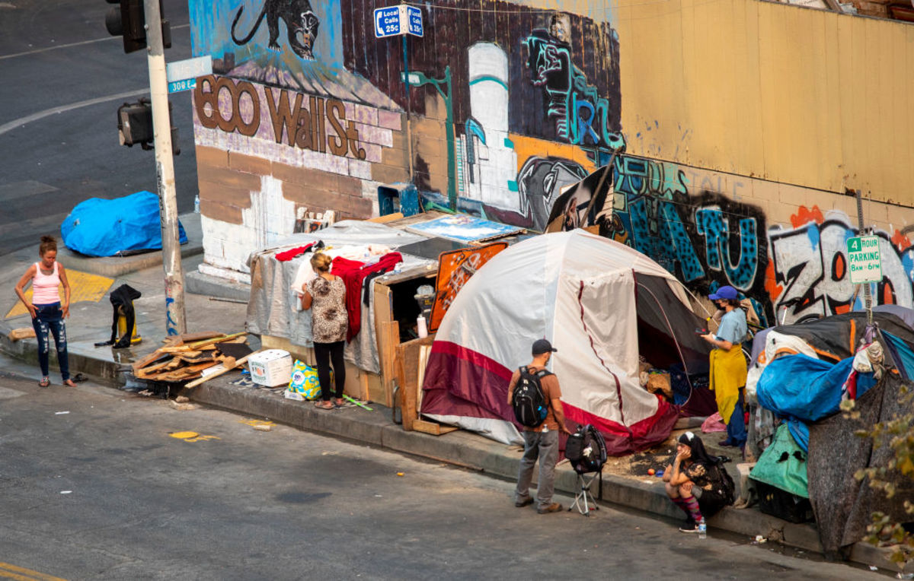

Festus Community Outreach
Home
About Us
Resources
How to Help
Community Stories
Contact

Helping the Homeless in Festus, Missouri
Providing resources, support, and hope for our community.
Get Involved